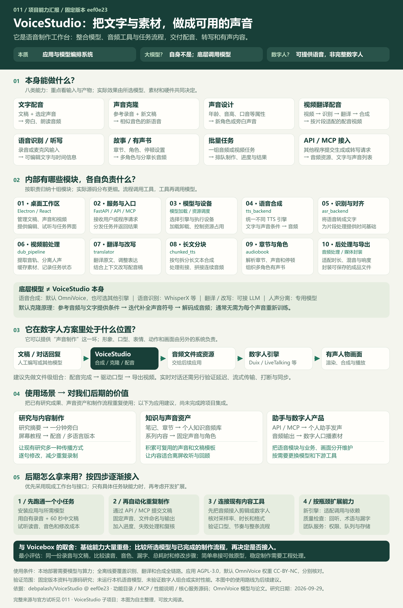

调用模型的语音制作工作台
整合文字转语音、声音克隆、声音设计、录音转写、视频翻译配音与有声书制作，提供批量任务和 API / MCP 接口。
它本身不是基础大模型；可以为数字人提供声音，形象、口型和画面需由其他系统完成。
VOICE / WORKFLOW / LOCAL AI
VoiceStudio 把本地语音模型、音频处理和任务管理接成一个工作台：输入文稿、参考录音或视频，制作指定音色的旁白、多语言配音、故事与有声书。
一段声音背后，三层协作
文稿与素材 → 可交付的音频与视频
先读摘要 / 这项研究怎样用得上
整合文字转语音、声音克隆、声音设计、录音转写、视频翻译配音与有声书制作，提供批量任务和 API / MCP 接口。
它本身不是基础大模型；可以为数字人提供声音，形象、口型和画面需由其他系统完成。
用参考音色朗读新文稿，按属性探索角色声音，把长文做成分章音频，或将已有视频制作成其他语言的配音版本。
本页可试听官方模型样例、查看官方工作区；实际音质和速度取决于素材、模型与设备。
研究摘要需要一分钟旁白，屏幕教程需要配音，系列内容需要统一声音，笔记需要转成可听资料；数字人口播或个人助手需要声音时也可考虑接入。
先用于已有内容的声音制作，再根据具体任务考虑视频本地化和接口自动化。
让同一份研究同时支持阅读、收听和视频表达；减少重复录音，保留逐句修改的空间，积累声音、术语和文稿模板。
后续把语音与业务、数字人画面分开维护，按需要替换模型；实际增益要通过同一份素材对比验证。
先用一份自己的干净录音和 60 秒中文文稿验证读音、音色及修改成本。确定有用后，再通过 API / MCP 接入研究摘要和批量任务；最后把音频交给剪辑或数字人系统，核对格式、时长与口型。实时对话仍需另行验证延迟、流式输出和打断。

01 / 先感受产物
先听底层模型的公开样例，再看工作台怎样组织制作。
样例来自上游，不能代表你的电脑和素材的实际效果。
先听参考声音，再听它朗读新内容。比较音色相似度和中文清晰度。
在官方页面试听 / 查看原文 ↗同一英文文稿的两种声音属性：儿童女声，与高音调、印度口音的男声。
在官方页面试听 / 查看原文 ↗通过带声调的拼音指定“折”等多音字的读法，观察发音控制的效果。
在官方页面试听 / 查看原文 ↗上游应用界面

声音克隆：选择参考录音，编辑文稿，设置生成参数，再试听与导出。
图片直接引用固定版本 README 的官方截图；点击可看原图。本页不是 VoiceStudio 本体。图片来源
02 / 能力与产物
模型安装、硬件和服务配置决定实际可用的功能。
646 种语言是默认模型的覆盖声明，不是每条流程的统一保证。
教程旁白、文章朗读、产品介绍
自己的系列旁白、授权角色配音
角色草稿、旁白方向探索
教程本地化、已有内容多语言版本
采访整理、口述记录、字幕准备
个人知识音频库、多角色故事
系列课程、重复内容生产
为个人工具、内容流程和 AI 助手提供语音
后端提供 generate_speech、clone_voice、transcribe 等 MCP 工具。
完整自动化还需要调用方编排；语音工具不承担全部对话与业务逻辑。
查看依据 ↗03 / 交互流程导览
选择一个任务，查看输入、处理顺序与交付物。
下方为本研究制作的流程示意，不会运行模型。
原片给一句话留了 4 秒，翻译后的朗读却可能更长。拖动滑块，查看它会怎样影响下一句。
固定示例，不处理音频。实际流程需要改写文本、调整语速或重新生成；强行压缩可能影响自然度。
04 / 内部原理
TTS 把文字变成声音；ASR 把录音变成文字；翻译模型转换语言；分离模型处理人声与背景。每个模型都有自己的能力范围。
统一调用接口，处理采样率、文本分块、缓存、设备选择、文件和时间信息。接入新模型，通常要实现适配与依赖管理。
把工具组织成配音、有声书或批处理，保存中间产物，让人校对、重做并导出。复杂度往往在时长、状态与失败恢复。
参考录音与对应文字提供音色和发音条件，目标文稿提供要说的内容。模型把声音表示为离散符号，逐轮补全待生成部分，最后解码为音频。标准论文设置采用 32 轮补全，主干用 Qwen3-0.6B 权重初始化后进行语音训练。
通常无需为每个人重新训练。其他引擎的算法可能不同，不能把 OmniVoice 的原理推广到全部引擎。
查看模型论文 ↗Electron / ReactFastAPI / API、MCP引擎选择 / 内存管理tts_backend.pyasr_backend.pydub_pipeline.pytranslator.pychunked_tts.pyaudiobook.py混音 / 水印 / 文件VoiceStudio 的长文分块模块明确注明改编自 Voicebox，并调整了音频张量拼接与采样率处理。这说明两者不仅能力重叠，也存在具体模块的复用；这一处证据不能推导出整个项目都是同一个库。
查看分块模块来源说明05 / 承接已有研究
对照“能不能做”与“已经替你做完了多少流程”。
这不是音质、速度或稳定性的实测排名。
| 比较项 | Voicebox | VoiceStudio | 如何理解 |
|---|---|---|---|
| 基础语音能力 | 本地 TTS、克隆、转写、长文音频 | 同类能力大量重叠 | 做一段中文旁白时，两者是替代候选。 |
| 模型选择 | Qwen3-TTS、Chatterbox、TADA、Kokoro 等 | 默认 OmniVoice，另有 CosyVoice、IndexTTS 等 | 具体语言、音质与速度取决于所选模型。 |
| 流程重点 | 口述输入、声音档案、音效、多轨故事与助手发声 | 声音设计、视频配音、有声书及批量制作 | 按你想交付的成果选择已有流程。 |
| 视频翻译配音 | 当前文档未列出同等完整的视频制作链 | 已经组织媒体、识别、翻译、合成与导出 | 自行适配能做原型；稳定工作台需要处理更多边界。 |
| 代码与许可 | Tauri / React / FastAPI；应用 MIT | Electron / React / FastAPI；应用 AGPL-3.0 | 应用代码许可与模型权重许可必须分别核对。 |
Voicebox 固定版本依据 ↗ · VoiceStudio 功能依据 · 此前 Voicebox 中文研究 ↗
把一篇文稿送给接口，再保存配音文件，相对简单。把一段视频拆成多人的讲话、翻译、重新配音并保持节奏，再支持修改、重试和长任务恢复，工程量明显更大。上层流程既是连接顺序，也是对异常和质量的处理。
06 / 使用场景与个人价值
结合开源研究、内容制作与数字人项目，
以下是可尝试的工作方式，尚未完成跨项目集成。
把已整理的开源研究摘要变成可听内容。
先写成适合听的文稿，再用固定声音生成；同一篇文章提供阅读与收听入口。
价值：复用研究成果；不是直接朗读所有代码、链接和表格。
已有屏幕录制需要中文旁白或其他语言版本。
生成旁白并对齐片段；先核对术语翻译，再检查画面节奏。
价值：减少重复录制，保留逐句修改的空间。
把自己的笔记与章节内容做成有声资料。
按章节整理，添加适当停顿，批量合成后抽查长篇衔接。
价值：把通勤与离屏时间用于回顾；优先选择有权处理的材料。
让自己的工具用固定音色输出状态或内容。
通过 API / MCP 传入文字，读取音频，再由应用控制播放。
价值：复用语音层；助手的理解、记忆与业务仍由应用负责。
已有 LiveTalking、Duix 或其他人物渲染研究。
先生成音频，再交给数字人系统驱动口型与画面。
价值：语音与人物渲染分别替换；跨项目接口尚未验证。
理解为什么同类语音工作台功能相似。
比较模型适配、分块、缓存、进度与失败恢复，而不只看界面。
价值：积累自己的内容工具设计方法，减少重复搭建。
选一篇已有中文研究摘要，用自己的干净录音生成一分钟旁白。先确认读音、音色与修改成本，再考虑视频配音和数字人联动。用同一份素材对比 Voicebox，才知道新工作台是否给你带来实际增益。
下载本研究编写的分章文稿示例 ↓07 / 可扩展方向
复杂度是研究判断，非工期承诺。
下面列的是可以继续建设的方向，不是已完成的集成。
将 Markdown、研究摘要或现有工具输出整理成合成任务。
需要处理：文本清洗、声音选择、文件命名与错误反馈。
把生成音频交给已研究的口型或人物渲染系统。
需要处理：采样率、时长、延迟、任务状态和失败重试。
实现统一适配接口，为特定语言或硬件选择模型。
需要处理：不能只改模型名称；需处理依赖、声音条件、输出格式与授权。
回听转写、比对漏字与术语、检测过长或过短片段。
需要处理：指标只能辅助，不能替代自然度与情绪的人工试听。
配音完成后进入视频合成、检查与发布工具。
需要处理：资产管理、发布账号、平台规格和人工审核节点。
把个人工作台扩展成团队任务服务。
需要处理：身份权限、任务隔离、配额、存储、监控与全部模型许可。
08 / 使用条件与验证
先安装应用与需要的模型，确认所选引擎实际使用 GPU 还是 CPU；参考录音转写、首次加载和长文会增加等待。Windows 当前主支持的 GPU 路径是 NVIDIA / CUDA。
查看依据 ↗本地模型在运行后端的设备推理。翻译供应商、远程 worker 或其他在线服务需要单独配置；想全离线，需要整条流程的模型与依赖都可本地使用。
查看依据 ↗应用为 AGPL-3.0；默认 OmniVoice 模型权重当前标注 CC-BY-NC。不要因应用可商用就推定默认模型也可直接用于收费业务，替换引擎也需核对其条款。
查看依据 ↗ · 模型许可 ↗本次完成固定版本资料研究、静态展示与交互示意。未安装 VoiceStudio、未下载模型权重、未生成本机语音，也未作音质或性能排名。官方基准汇总页当前没有已验证数据行。查看基准页
09 / 可追溯依据
VoiceStudio：eef0e23
Voicebox 对照：51f49de
官方截图由 VoiceStudio 固定版本原地址提供；试听来自 OmniVoice 官方演示，保留原站来源。网页文字、流程交互、总览图与示例文稿为本研究编写。未复制上游程序代码或模型权重到发布目录。
Voicebox 的 Windows 自动粘贴在 README 路线图与听写文档中存在状态差异，本页不把它作为确定的平台优势；需按实际版本测试。
下载来源版本与文件哈希记录